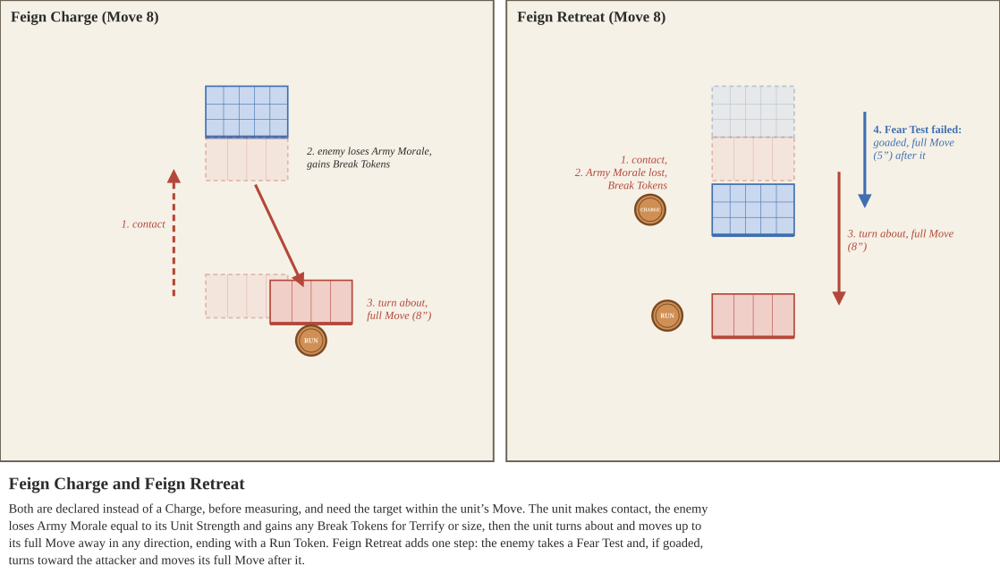
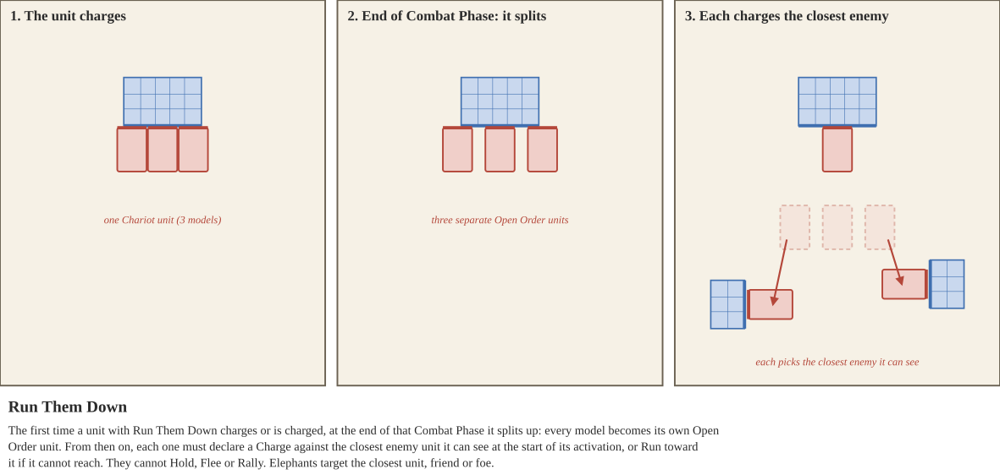
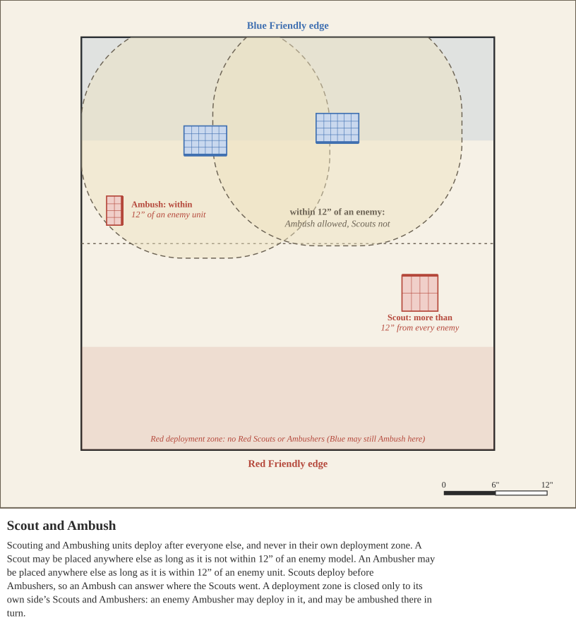

Some special rules have a number written as (X). When the same rule applies to a unit or weapon from more than one source, the numbers add together (see Priority and Ability Interactions).
Taking time for just the right moment, expert archers can focus on hitting just the right target
If the unit takes the Hold action, they may choose to use Aim to add a +1 bonus to their Shooting attacks this round. Additionally, Aim reduces the level of Cover against their attacks by one step (Heavy Cover becomes Cover, Cover becomes Light Cover, and Light Cover becomes No Cover).
Units may not use Aim during the same round they use the Volley special rule.
Ambushers lie in wait for their target, to bring them down quickly before fleeing
During deployment, units with Ambush are deployed after all other units, including Scouting units, and after all deployment Byes. After all units without Ambush have been deployed, and all Byes have been used, the First Player decides who deploys all of their Ambushing units first.
Ambushing units deployed this way cannot be deployed in their own deployment zone, and instead are deployed anywhere else on the board, as long as they are deployed within 12” of an enemy unit.
Drilled and steady, they hold their ground and do not chase shadows.
This unit cannot be Bumped or Pushed, so a Charge whose path it blocks fails. It automatically passes the special Break Test from Feign Retreat, though it may still choose to be goaded.
Open Order units with this special ability only gain these effects while every model in the unit is within 1” Cohesion of at least 3 other models in their unit.
Fear is the strongest weapon of the cavalry soldier, only striking when the foe is shaken
When a unit declares a Charge, they may declare it to be a Feign Charge instead before measuring. Unlike a normal charge, a Feign Charge requires that the attacking unit be within its Move value to the defending unit. If it is not, the Feign Charge fails like any other Charge (see Charge Fails). Execute the instructions for a Charge for this unit, except that it only gets Move Allowance equal to one times its Move Value.
After making contact with the defender, the enemy loses Army Morale equal to the attacking unit’s Unit Strength. The defending unit gains Break Tokens for Terrify and for the size of the attacking unit, as for a normal Charge (see Terrify).
Then finally, the attacking unit moves away. If it is a Closed Order unit, rotate it 180 degrees. Move it as far as possible, up to its full Move value, in any direction, while keeping it at least 1” from any enemy unit. It may not turn during this move, and it may not take a shorter path should a longer one be possible. Place a Run token next to it, as it is considered to have run.
Feigning weakness is sometimes more effective than feigning strength.
When a unit declares a Charge, they may declare it to be a Feign Retreat instead before measuring. Unlike a normal charge, a Feign Retreat requires that the attacking unit be within its Move value to the defending unit. If it is not, the Feign Retreat fails like any other Charge (see Charge Fails). Execute the instructions for a Charge for this unit, except that it only gets Move Allowance equal to one times its Move Value.
After making contact with the defender, the enemy loses Army Morale equal to the attacking unit’s Unit Strength. The defending unit gains Break Tokens for Terrify and for the size of the attacking unit, as for a normal Charge (see Terrify).
Next, the attacking unit pretends to flee. If it is a Closed Order unit, rotate it 180 degrees. Move it as far as possible, up to its full Move value, in any direction, while keeping it at least 1” from any enemy unit. It may not turn during this move, and it may not take a shorter path should a longer one be possible. Place a Run token next to it, as it is considered to have run.
And finally, the defending unit takes a Fear Test. If it fails, it is goaded; if it passes, it may choose to be goaded anyway. A goaded unit chases the attacker. If it is a Closed Order unit, it first makes one Alignment turn, turning as far as it can toward the attacking unit, and then moves directly forward; an Open Order unit moves toward the attacking unit. Either way it moves its full Move value, stopping only to stay 1” from every enemy unit. Place a Charge token next to the goaded unit. If it has not yet activated this round, it cannot move or Run during its activation, and it may only shoot with weapons it can use without penalty while moving (even though it has a Charge token). If it has already activated, there is no further effect.

Wild and animal-like, these crazed soldiers leap into the fray with reckless abandon
Units with Frenzy do not lose their Charge Action Token when charged by units with greater Unit Strength.
They do not gain Break tokens from Terrify, either from the Terrify special rule or from a charge by a much larger unit (see Terrify).
They gain a +2 bonus on Break Tests and Fear Tests.
These well trained warriors are experts at small arms combat, and utilizing a few elite groups to maximize their potential.
When a unit with the Guard special rule would begin activation with a Hold token, that unit may instead swap its Order Token with another unit within 12” that has not yet activated this round. If they do, remove the Guard unit’s Hold Token.
The only training a levy soldier may have is this current battle, and they would prefer for it to not be their last
Closed Order units with the Levy special rule do not count their rear rank when determining Unit Strength, unless the unit has only one rank. Open Order units with the Levy special rule divide their Unit Strength by 2, rounded up.
While the army is suffering from Mass Panic, units with this rule automatically fail Break Tests and cannot be Rallied.
Mercenaries are professional soldiers who are well trained but aren’t planning on dying for their customers
Units with the Mercenary special rule may Rally themselves as normal, but cannot be Rallied by other units, except by units with the Noble Special Rule, or units with the Mercenary special rule and a greater base Training value. Additionally, this unit cannot Rally units other than Mercenaries.
While the army is suffering from Mass Panic, units with this rule automatically fail Break Tests and cannot be Rallied.
Mixed Units represent forces that combined different types of equipment at the squad level of an army
Unlike other units, Mixed Units can have different combinations of Equipment and Gear per model in a unit, according to the restrictions on the unit profile. Apply all other rules to Mixed Units, such as equipment use restrictions, movement penalties, and so on. If the unit is composed of models with different Armor Saves, use the most common Armor Save present, or the weaker Armor Save if tied. If models have different Move penalties from their Gear and Equipment, the whole unit uses the largest penalty.
Collision in Mixed Units. A rank counts as contributing attacks if any of its models makes Melee attacks, each model using its own weapon and that weapon’s Reach.
Wealthy lords and nobles of times past often fought side by side with their soldiers, or so the history books say
Noble units gain +2 bonus when Rallying other units, and may Rally Mercenary units.
Mercenary and Levy units within 24” are able to be Rallied while suffering Mass Panic.
The steppe nomads were not just expert horse archers, but also experts in psychological warfare
After executing a Feign Retreat, units with Parthian Shot may use missile weapons to perform Shooting attacks, even though they have a Run token. They may only select the unit they used Feign Retreat on as the target of their shooting this round. The attacking unit incurs a -2 penalty when making these Shooting attacks.
A well trained band of men fighting in a tight formation of shields and spears is quite difficult to overwhelm
Units with the Phalanx special rule confer a -1 penalty to rolls for Shooting and Melee Hits targeting them (not -1 penalty to Accuracy). Units in a Phalanx take a -1 penalty to their Move value. Units that declare a charge against a Phalanx in its front arc gain a Break Token unless the attacking unit has a melee weapon with a greater Length than the Phalanx unit’s longest melee weapon. This includes Feign Charges and Feign Retreats. A charge against its flank or rear does not give this Break Token.
The Phalanx ability can be negated for several reasons:
Unit splits up and charges every round after charging once or being charged
The first time this unit charges or is charged, at the end of that Combat Phase it splits apart: each model becomes its own Open Order unit. From then on, each model must declare a Charge at the start of its activation against the closest enemy unit it can see. If it cannot reach that unit, it Runs toward it instead. Its controlling player does not lose Army Morale for these forced Charges failing. Elephant models instead target the closest unit they can see, friend or foe. These models cannot Hold, Flee, or Rally, and automatically pass Break Tests. This lasts until the model is destroyed. If an Elephant model charges a friendly unit, treat that unit as an enemy for the charge and the Melee that follows.

Scouts can deploy ahead of the main force to harass the enemy safely
During deployment, units with Scout are deployed after units without Scout or Ambush, and after all deployment Byes. After all units without Scout or Ambush have been deployed, and all Byes have been used, the First Player decides who deploys all of their Scouting units first.
Scouting units deployed this way cannot be deployed in their own deployment zone, and instead are deployed anywhere else on the board, as long as they are not deployed within 12” of an enemy model.

Locked shield to shield, these warriors present a wall that is hard to break.
While this unit has a Hold Action Token, attacks against it suffer a -1 Accuracy penalty.
Some warriors train with diabolical intent, to deploy their warmachine or even themselves to be thrown into the fray with reckless abandon
Units with the Suicidal special rule are not removed due to Damage until the end of the Combat Phase, even if the Unit Health Table would have them removed.
Born to rough country, these warriors cross broken ground where others stumble.
This unit ignores the penalties of Difficult Terrain. Within a Stony Plain, it moves as if it were Skirmishing Warriors. Within a Marsh, its Move Allowance is limited to its Move Value as normal, but it does not gain Break Tokens from moving there.
Surefooted (X): As Surefooted, but only within terrain of the listed types: Stony Plain, Marsh, or Sand. A unit may list more than one, e.g. Surefooted (Marsh, Sand). Terrain that follows the rules for a type counts as that type, so Crumbled Ruins count as Stony Plain, and Flooded Fields and Chinampas count as Marsh.
The art of war demands a careful hand to craft the finest results.
Units with the Tactician special rule grant a +1 bonus to Initiative rolls while the unit has a Hold token. If you have multiple units with this special rule, the bonus does not stack.
Their heart stops, their eyes open widely - their greatest fear has appeared.
Units with this special rule have a special interaction with units of type “X”. When this unit charges or is charged by a unit with the type “X,” that unit gains a Break Token. A unit of type “X” that this unit successfully Bumps during a Charge also gains a Break Token. Units with Terrify All have this interaction with every unit type.
Letting loose a volley of arrows will break the enemy before they even approach
If the unit takes the Hold action, they may choose to use Volley. That unit's Shooting attacks this round have twice their typical range, at -1 Accuracy and -1 Strength. The unit fires over the heads of its own army: friendly units do not prevent it from shooting, and it reduces the level of Cover against its attacks by one step (Heavy Cover becomes Cover, Cover becomes Light Cover, and Light Cover becomes No Cover). A blocked line of fire is not affected.
Units may not use Volley during the same round they use the Aim special rule.
This weapon excels at destroying lightly armored foes, but strong armor and shields blunt its attacks
This weapon gains +2 Strength, unless the target’s Armor Value is X or greater. Against Elephants, this weapon always gains +2 Strength. Check the target’s Armor Value at the time of the attack (see Armor Value).
Heavy engines take time to aim, and a darting target is gone before the shot is loosed.
When this weapon targets a unit whose Evasion applies, it suffers an additional -1 Accuracy. This stacks with the Evasion penalty and with any effects that increase it.
The target is right in your sights, and up close your shot hits your target with all its strength.
While attacking targets within a quarter of your maximum range, attacks with this weapon gains +1 Strength.
A single great bolt or stone can break the nerve of a whole battle line.
Each Hit with this weapon makes the defending player lose X Army Morale from Suppression, instead of 1.
Every blow that lands shakes the resolve of the line, whether or not it draws blood.
Each Hit with this weapon in Melee causes the defending player to lose 1 Army Morale from Suppression, just as a Shooting Hit does. Effects that increase, reduce or negate Suppression also apply to Melee Suppression.
While some swords are merely brutish instruments to be chopped at an enemy, many blades could be used equally in offense and defense
This weapon provides +1 Armor Save while in Melee while the unit has a Hold Action Token.
Planted side by side, great shields turn a formation into a wall.
When this unit takes the Hold action, it may plant its Pavise. While planted, Shooting attacks against this unit from its front arc treat it as one cover level better (No Cover becomes Light Cover, Light Cover becomes Cover, and Cover becomes Heavy Cover), and enemy units that charge it in its front arc do not gain any Strength bonuses from having a Charge Action Token. The Pavise is picked up as soon as the unit moves for any reason other than an Alignment turn.
Heavy bolts can pass through one man and strike the next.
Against a Closed Order unit, each successful Hit with this weapon causes X additional Hits on the same unit.
Long spears and pikes let the men behind the front rank strike past their comrades.
Models up to X ranks behind the front rank of a Closed Order unit using this weapon also make Melee attacks. For example, with Reach (1) the second rank also attacks, and with Reach (2) the second and third ranks attack.
Built from horn, wood, and sinew, these compact bows strike far harder than their size suggests
This weapon’s Direct Fire special rule applies to targets within half of its maximum range, instead of a quarter.
Some blows land so hard that no armor can turn them aside.
Enemies roll Armor Saves at a -X Penalty against attacks made with this weapon.
The staple of the ancient age, throwing weapons are flexible and fearsome tools of war
Shooting attacks made with Throwing Weapons ignore the “Attacker moved” penalty.
Units that are Locked in Combat and have a Hold token may use Throwing Weapons to make Shooting attacks against enemy units they are Locked in Combat with, at a -3 Accuracy penalty. While making attacks this way the unit may not use the Aim or Volley Special Abilities. In a Closed Order unit, only the models in the front two ranks make Shooting attacks with a Throwing Weapon.
When used in the hands of an expert, these swords could slip between shields and armor to hit their mark.
Enemies roll Armor Saves at -1 Penalty while the unit does not have a Flee, Charge, or Run Action Token.
Long weapons make for a slow and clumsy wheel.
Each turn made by a Closed Order unit equipped with this weapon or armor costs an additional X” of its Move Allowance, including the Alignment turn made before a Charge. Open Order units equipped with this weapon or armor suffer -X Move instead.